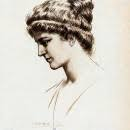
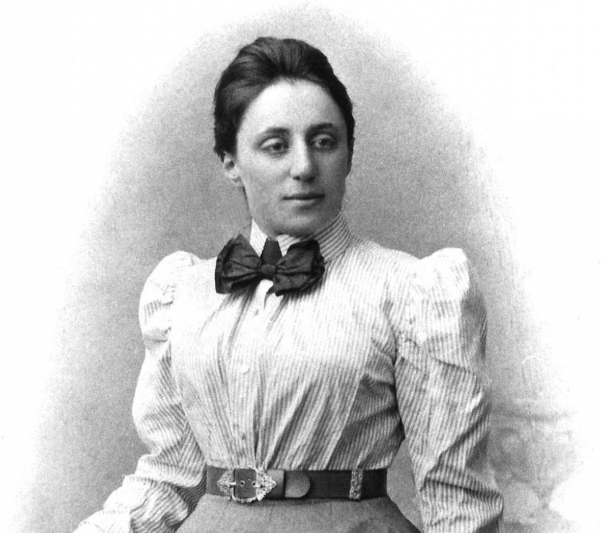

Timeless Women in Maths
-
Hypatia

The first well-recorded Female Mathematician, Hypatia was renowned teacher of maths, atsronomy and philosophy in Alexandria, Egypt. She is credited with commentaries on Apollonius' Conics and Diophantus' Arithmetic -
Sophie Germain
Germain was a French Mathematician. She was a pioneer of elasticity theory and won the Paris grand prize for Mathematics. Germain's work on Fermat's Last Theorem was groundbreaking. Because of prejudice against her sex, she was unable to make a career out of mathematics, but she worked independently throughout her life. -
Ada Lovelace
Lovelace was an English Mathematician,chiefly known as the first computer programmer. Notably, she worked on the proposed mechanical generator machine, the Analytical Engine. Lovelace's notes are critical in the early history of computers. -
Phillipa Fawcett
Fawcett studied at Newnham College and obtained the top score in the Tripos Exams. In addition, she was a notable part of the women's suffrage movement. Fawcett was a scholarship in Cambridge and continued research in Fluid Dynamics. -
Emmy Noether

A German mathematician, known for her contributions to abstract algebra and theoretical physics.She worked at the Mathematical Institute of Erlangen without pay from 1908 to 1915 and piloted her researches there. Here, she was able to publish many papers and work with other mathematicians such as David Hilbert and Felix Klein. -
Mary Cartwright
Cartwright was a British mathematician, famous for her contributions to Chaos theory. She studied at St Hugh's College Oxford to study mathematics in 1919 and was one of only 5 women to do so in the university. She was Director of Studies at Girton College, Cambridge in 1936, where she was able to continus her research on cluster sets. -
Margaret Hamilton
Hamilton is an American computer scientist and the founder and CEO of Hamilton Technologies. In 2016, President Barack Obama awarded Hamilton the Presidential Medal of Freedom for her contribution that led to Apollo 11's successful landing. She is recognised as the woman who wrote the code that landed men on the moon. -
Maryam Mirzakhani
This is some content
More Info
Find out what you can do to encourage more women to do maths!
Follow us for more information